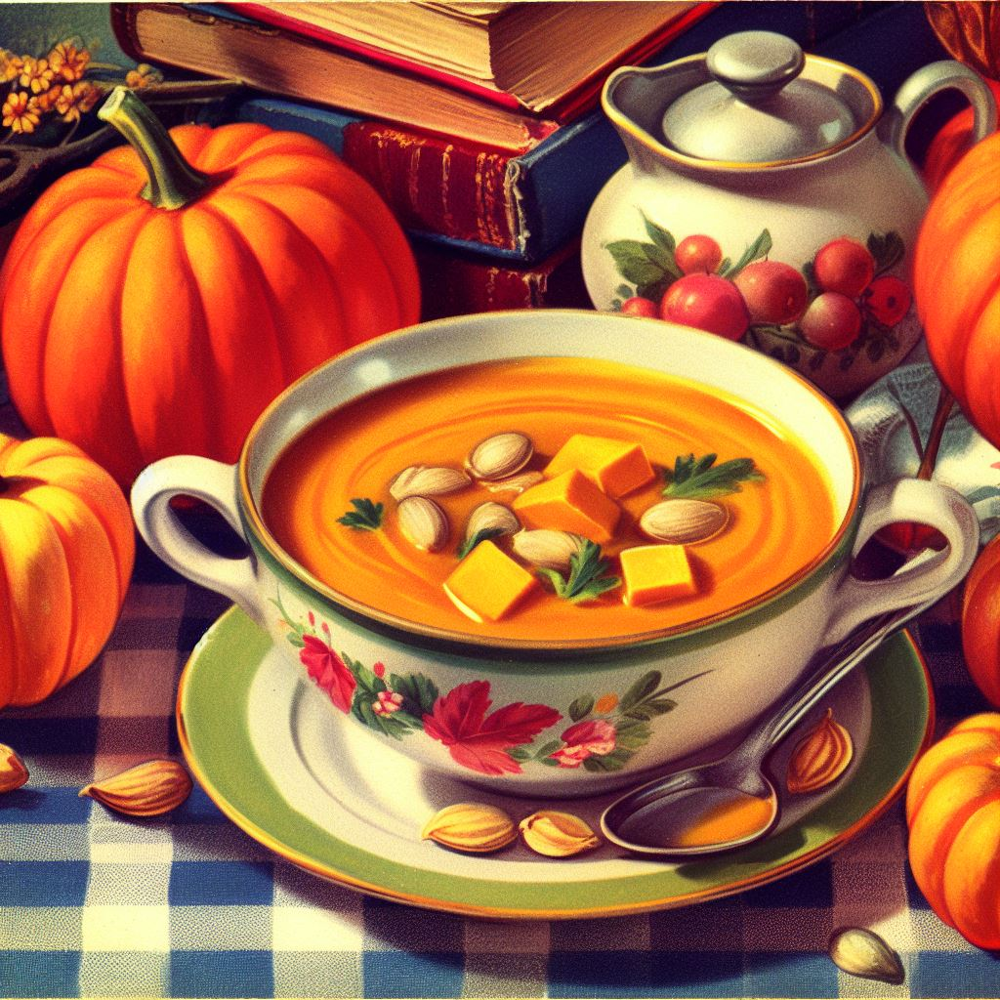

Back
Pumpkin Soup

Description
Pumpkin soup is a harmonious blend of comfort and sophistication, capturing the essence of autumn in every spoonful. Its velvety texture wraps your taste buds in a cozy embrace, while the rich, earthy flavors of pumpkin are elevated with subtle hints of spices. Each mouthful is like a gentle stroll through a fall landscape, with the warmth of the soup akin to the soft glow of an afternoon sun. Perfect for elegant dinners or as a soothing end to a crisp day, pumpkin soup is a versatile culinary star. It's a dish that both comforts and impresses, a delightful treat that brings people together around the table, sharing in the simple joy of a well-crafted, heartwarming meal.
Ingredients
- 2 tbsp olive oil
- 1 onion, chopped
- 1 garlic clove, minced
- 2 cups pumpkin puree (fresh or canned)
- 4 cups vegetable broth
- 1 cup heavy cream
- Salt and pepper, to taste
- Optional: nutmeg, cinnamon or ginger for added flavor
Steps
- Sauté onions and garlic: In a large pot, heat the olive oil over medium heat. Add the chopped onion and garlic, sautéing until the onions are translucent.
- Add pumpkin: Stir in the pumpkin puree and cook for a few minutes.
- Pour in broth: Add the broth and stir well. Bring the mixture to a boil and then reduce to simmer.
- Simmer: Let the soup simmer for about 20 minutes to blend the flavors together.
- Blend the soup: Use an immersion blender to puree the soup until smooth. Alternatively, you can use a regular blender, working in batches if necessary
- Add cream: Stir in the heavy cream, and heat through. Do not boil.
- Season: Add salt, pepper and optional spices like nutmeg, cinnamon or ginger to taste.
- Serve: Serve hot, garnished with a swirl of cream, pumpkin seeds or fresh herbs if desired.
This pumpkin soup is a comforting and warming dish, perfect for chilly days or as a festive starter during the fall season!